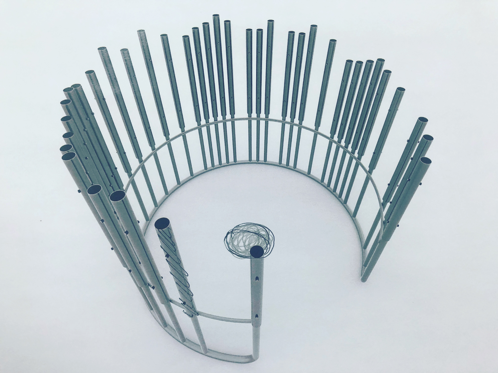

Interactive Artwork "Hurrah!" Takes On NYCxDESIGN By Audra Lambert
NYCxDESIGN is an exciting design open house across NYC every year, with public design projects presented across the five boroughs. For visitors to this year’s Design Pavilion (Times Square pedestrian plazas between Broadway and 7th Avenue, from West 42nd to West 47th Streets) through May 22nd, a fun new interactive element beckons. Designed by the industrial design students and faculty from both Pratt Institute and The Strzeminski Academy of Fine Arts in Łódź, “Hurrah!” gives visitors the chance to dance and drum, on a large vertical xylophone. With sweeping cylinders rising into the sky, this interesting sculpture - arising in partnership with the Polish Cultural Institute and the Embassy of the Republic of Poland in Washington, D.C.,- proves to be one of the most exciting design installations on view throughout the Design festival.

When participants enter the musical instrument and interact with the sleek, streamlined xylophone tubes, the well-known celebratory Polish song - “Sto Lat” - a upbeat, engaging tune celebrating participation and cooperation - plays out loud. This interactive work gives casual visitors an opportunity to dance and make music through this carefully engineered installation.
_Hurrah!_ for NYCxDESIGN at Design Pavilion Photo courtesy C Weronika Kwiatkowska, Polish Cultural Institute New York
“The idea of the installation arose from reflections on how we could celebrate the 100th anniversary of establishing diplomatic relations between the USA and Poland in a way that would be interesting and inspiring today, and talks about the union of Poles and Americans, not by reviving history, but by establishing a new space for people from both countries to create together,” notes Polish Cultural Institute of New York Director Anna Domanska. The opportunity to play takes center stage with “Hurrah!”, where Pratt Institute and Strzeminski Academy design students see their ideas soar, rising into the sky along with the celebratory tunes of “Sto Lat”.
-----------------------------------------------------------------
----------------------------------------------------------------- Home